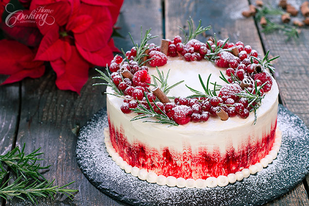

Winter Cake

This Winter Cake is an impressive dessert that everybody will love, perfect for winter holidays, a great twist to the classic recipes. Almond biscuit crust at the bottom with two layers of moist white cake, filled with raspberry and red currants filling and topped with a delicious sweetened condensed milk buttercream. Beautifully decorated with fresh rosemary, fresh raspberries and red currants, cinnamon sticks and dusted with powdered sugar to get you into the holiday spirit. I found the effect of painting the sides of the cake with a bit of red being really amazing, hope you'll try it too.
I really loved the cake as it is very well balanced, the sweetness of the buttercream and cake layers is very well balanced by the tart raspberry and currant filling, while the almond biscuit which brings a crispy texture complements so well the soft and tender cake layers. So simple, so beautiful, definitely a must-try recipe. Enjoy and Happy Winter Holidays everyone!
Prep time=40 mins || Cook time=40 mins || Total time=1 hr 20 mins
Ingredients
Makes about 14-16 servings
Almond Biscuit
1/4 cup (55g) butter, chilled, cut into small pieces
1/2 cup (50g) ground almonds
1 tbsp (15g) sugar
1/2 cup (60g) all-purpose flour
1/4 tsp (1g) salt
1 tbsp (15ml) ice cold water
White Cake Layers
2 1/3 cups (290g) cake flour
3 tsp (12g) baking powder
3/4 tsp (3g) salt
1 1/2 tsp (7g) almond extract
1 1/4 cup (250g) sugar, divided
3/4 cup (170g) unsalted butter, at room temperature
1 cup (240ml) whole milk
5 large eggs whites (150g)
Raspberry and Red Currant Filling
5 oz (140g) fresh or frozen raspberries
2 oz (60g) fresh or frozen red currants
1/4 cup (50g) sugar
1 tbsp (15ml) lemon juice
Sweetened Condensed Milk Buttercream
1 1/3 cup (300g) unsalted butter, at room temperature
1 can (14 oz-397g) sweetened condensed milk
1 tsp (5g) vanilla extract
For decoration
fresh raspberries
fresh red currants
cinnamon sticks
fresh rosemary
powdered sugar
red gel food coloring
Directions
Prepare almond biscuit dough. In a large bowl combine flour with sugar, almonds and salt. Incorporate chilled butter to the flour mixture, using a pastry blender, a fork or a pastry processor, until crumbs are formed. Add water and stir until incorporated. Wrap it with plastic, shape into a disc and refrigerate for at least 30 minutes. Roll the dough between two pieces of parchment paper or plastic wrap until it's about 8 1/2 inch (21cm) in diameter. Use a 8 inch (20 cm) ring to cut a circle. Remove the excess dough. Refrigerate the dough for about 30 minutes before baking. Preheat oven to 350F (180C). Prick the circle of dough with a fork and bake for 15 minutes. Allow to cool completely. Prepare white cake layers. Grease and line with parchment paper two 8 inch (20cm) pans. In a medium bowl, combine flour, baking powder, and salt, and stir to combine. In a large bowl mix butter with ¾ cup (150g) sugar until smooth. Add almond extract and mix to combine. With the mixer on low, alternate adding gradually milk and flour mixture until all is well incorporated. In a separate bowl whip egg whites until foamy. Gradually add ½ cup (100g) sugar and continue whipping until stiff peaks form. Gently incorporate whipped whites into the butter mixture. Divide batter evenly into the prepared pans. Bake at 350F (180C) for 20-25 minutes until a toothpick inserted into the center of the cake comes with few moist crumbs attached. Make sure you don’t overbake. Cool completely. Meanwhile prepare the raspberry filling. Place raspberries,red currants, sugar and lemon juice into a saucepan and bring to a boil while stirring constantly. Simmer for about 10 minutes or until thickens. Remove from heat, sieve to remove seeds and set aside to cool until ready to use. Prepare sweetened condensed buttermilk. Both butter and sweetened condensed milk need to be at room temperature before preparing the frosting. In a large bowl mix butter until light and fluffy, for about 5-7 minutes. Incorporate vanilla extract. Gradually add sweetened condensed milk in thirds, mixing after each addition. Once incorporated the buttercream is ready to use. Assemble the cake. Place the cooled biscuit onto a serving platter. Spread a bit of buttercream frosting. Top with one white cake layer. Add raspberry filling into the middle. Pipe a border of buttercream on top and spread the raspberry filling inside. Top with the second white cake layer. Spread a thin layer of buttercream on top and sides. Refrigerate for 30 minutes. Cover with buttercream to create smooth and even edges.Refrigerate for at least 1 hour to set. Decorate the cake. Place a bit of red gel food coloring into a small recipient. Use a brush to paint the bottom side of the cake. Use a small plain tip to pipe some remaining frosting around the bottom of the cake. Decorate the top with fresh red currants, raspberries, cinnamon sticks and fresh rosemary. Dust with powdered sugar for great snowy effect. Enjoy!
Nutrition facts
1 Serving out of 16 - Calories:510, Fat:31.1g, Saturated Fat:18.7g, Carbohydrates:53.3g, Sugar:35g, Fiber:1.7g, Protein:6.9g, Cholesterol:81mg, Sodium 335mg 15%, Vitamin D 24mcg 122%, Calcium 144mg 11%, Iron 1mg 8%, Potassium 286mg 6%, dily percent values are based on a 2000 calorie diet